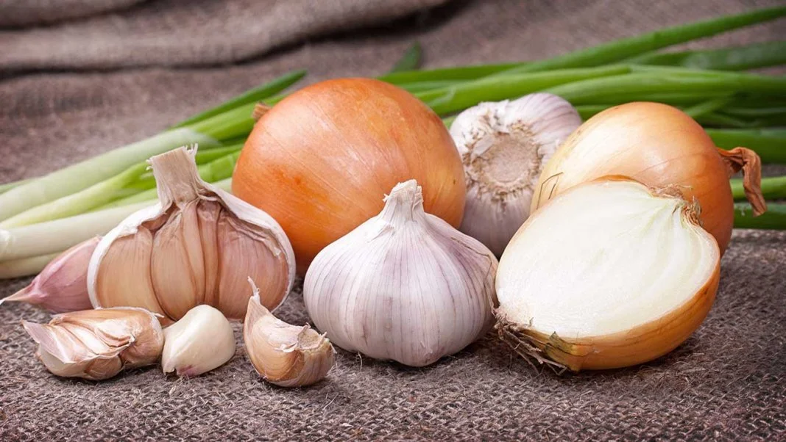
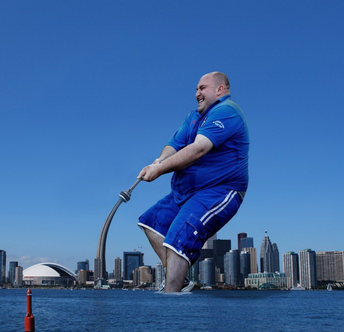
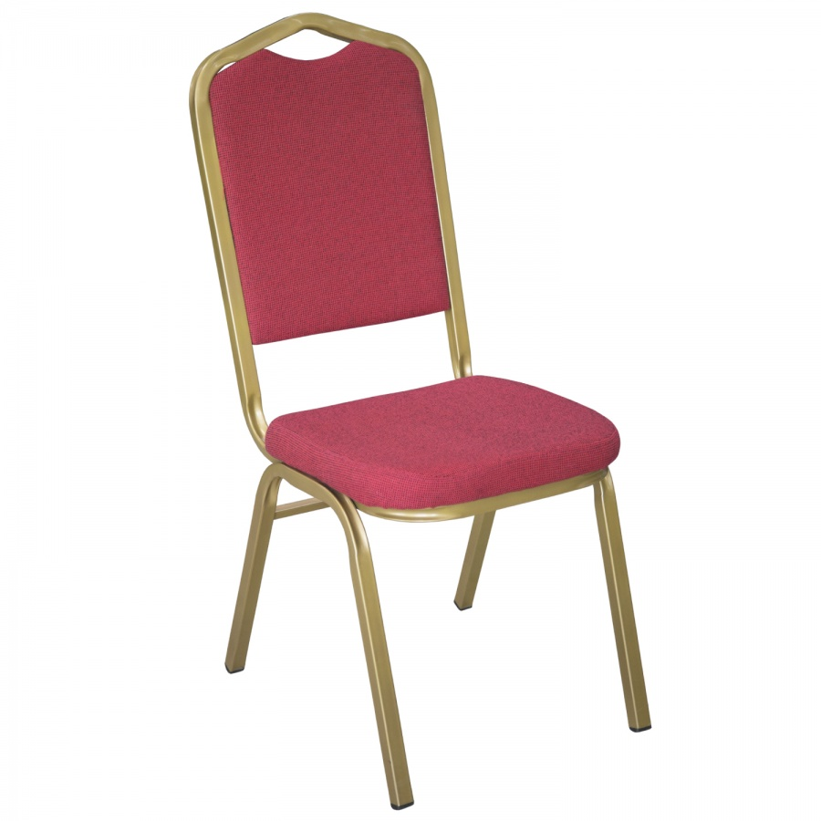
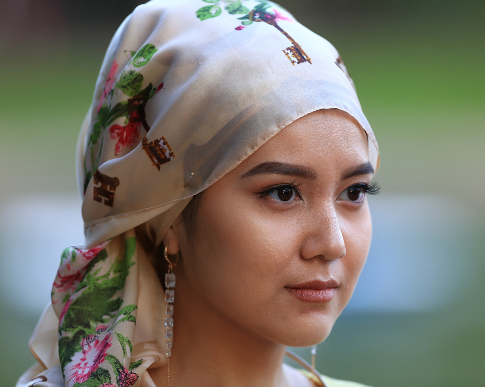
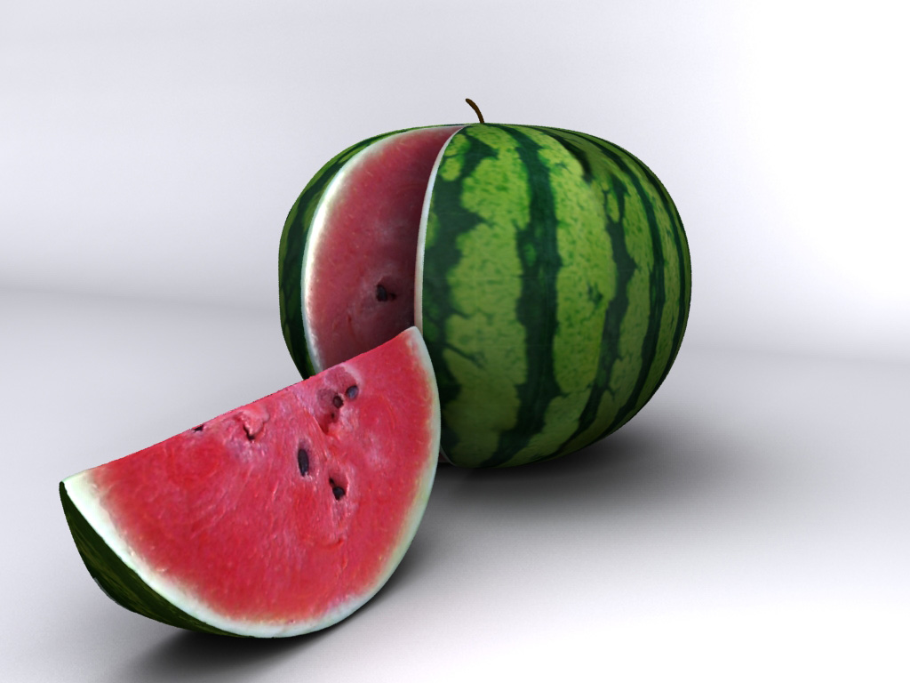
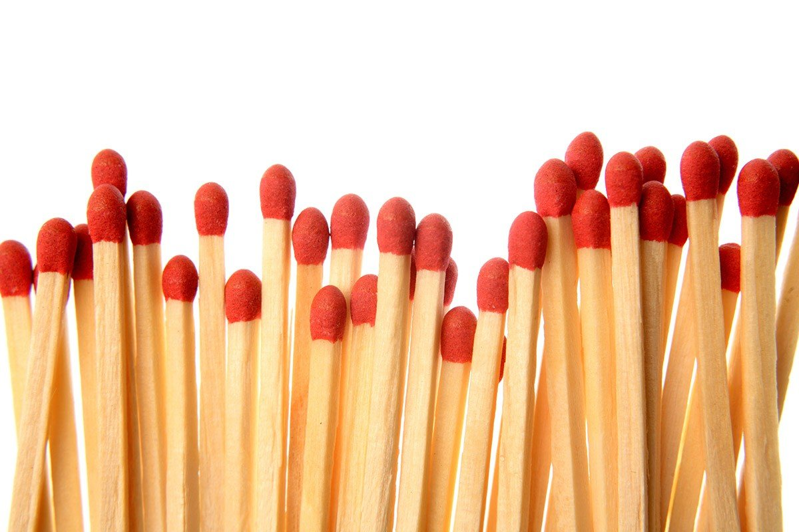
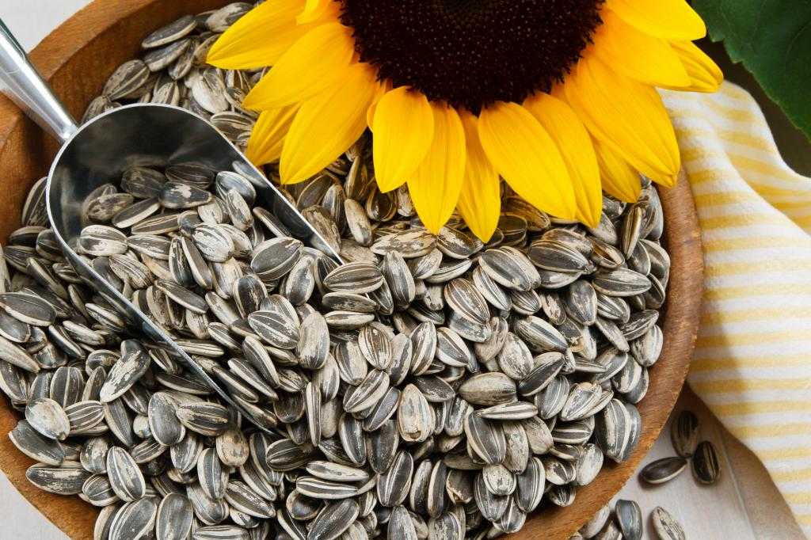
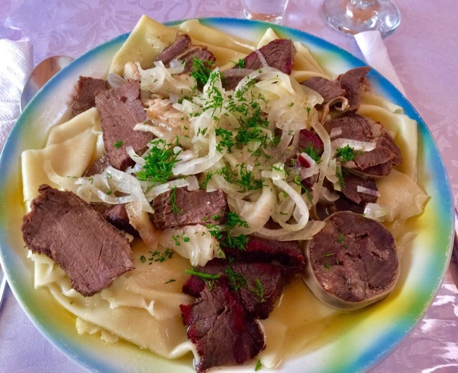
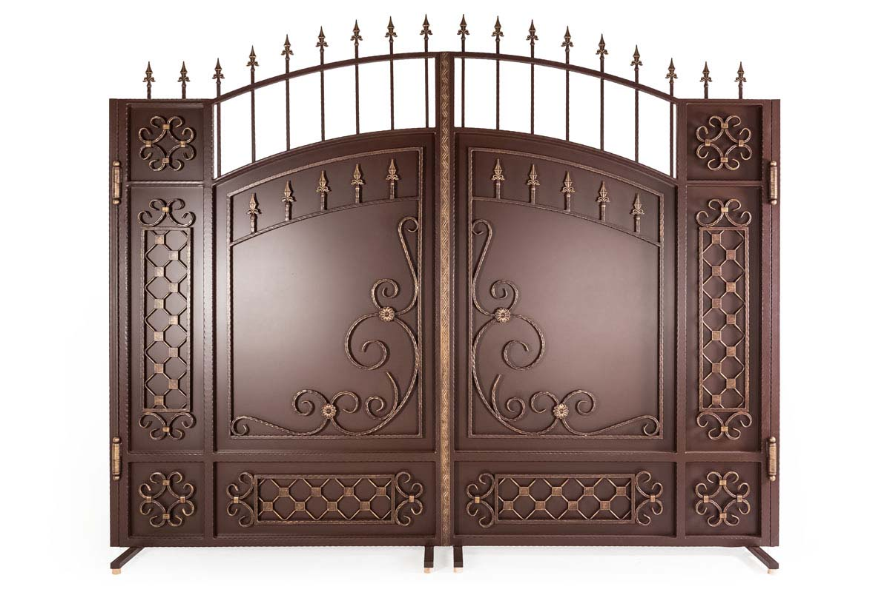

Qııar. Qııardy elimizdiń shyǵys óńirdiń turǵyndary «ágúrshik» dese, ońtústik óńirniń turǵyndary «bádiren» deıdi.
Sarymsaq. Semeı men Pavlodar óńirlerinde «sarymsaq», al Aqtóbe men Qyzylordanyń bir bóliginde «jýa» dep pıazdy aıtady.
Úlken. «Úlken» sózin de ár aımaqqa barǵanda ártúrli estısiz, máselen «dókeı», «áıdik», «dyraý», «nán», «joıan», «dáý» dese, onyń bári - úlken degendi bildiredi. Úlken degenimiz belgili bir zatty nemese oqıǵany sıpattaý.
Kisi otyrýǵa arnalǵan, arqalyǵy bar úı jıhazynyń bir túri, otyrǵysh. Qarapaıym aǵash oryndyqty batysta «otyrǵysh», al soltústikte «taq» dep ataýy múmkin.
Qaryndas/áıel adamǵa arnalý. Qaraǵandy men Taldyqorǵanda "kóke", batys Qazaqstan, Qostanaı, Jezqazǵanda "apa", "ápshe", ortalyqta, soltústikte jáne Almatyda "táte", shyǵysta "apaı", Tarazda "ápkeı" dep qyz balaǵa nemese áıel adamǵa qaratylyp aıtylady eken.
Qarbyzdy elimizdiń kóp bóliginde qarbyz dep atasa, Ońtústik Qazaqstan jáne Taldyqorǵan óńirinde "darbyz" dep ataıdy eken.
Sirińkeniń de keıbir oblystarda ataýy ózgerip ketedi: «keýirt», «shyrpy», «ottyq».
Shekildeýik. Batys Qazaqstan óńirinde "shaǵý, shemeshki" dep atasa, ońtústik jaqta "piste" dep ataıdy, al elimizdiń qalǵan óńirlerinde "shemishke" dep ataıdy.
Et nany. Batysta "ińkál", soltústik jaqta "jaıma" nemese "qulaqnan", ońtústik Qazaqstan aımaqtarynda "qamyr" dep et nanyn aıtady.
Qaqpa. Qaqpany ońtústik Qazaqstan óńirinde "darbaza" dese, Taldyqorǵan jaqta "qasha" dep aıtýy múmkin.
jogaryga